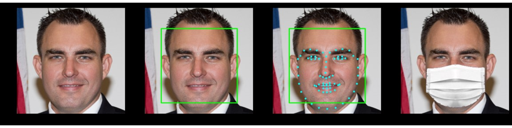
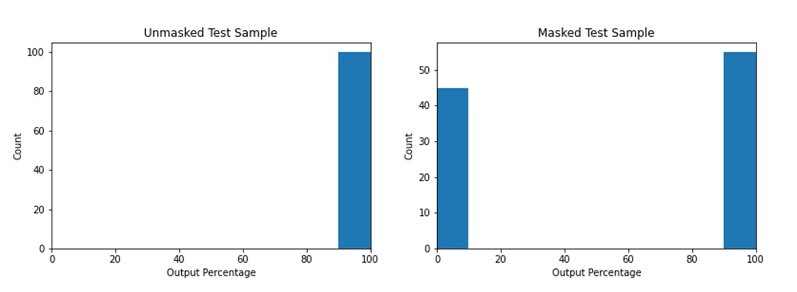

This is a personal project developed to classify images based on whether a person is wearing a face mask or not. My project code is uploaded to https://github.com/TaylorNunes/maskWho
With the discovery of the new coronavirus, the need for facemasks as become increasingly important to prevent the spread of infections. Many businesses and organizations require people to wear face masks while on the premises. Because of this there is a large demand for classification based on whether a person is wearing a facemask or not. Deep learning can be used to achieve this task.
In this project I have trained multiple classification models of varying effectiveness on the classificaiton of if a person is masked or unmasked.
There are a large number of datasets available online for faces without masks. The data chosen was from flickr. Obtaining a large number of images where the person is masked is challenging. To resolve this, the faces in the unmasked dataset are overlaid with digital images of masks. The models are then trained on both masked and unmasked data.
To overlay the masks, the faces in each picture first have to be detected. This is done with a harr cascade in opencv. From the detected face, the facial landmarks can be obtained with a Caffe model. This model used 68 different landmarks however only the ones on the jawline and the nose were used for mapping. They were mapped to a image of a mask whose edges were annotated previously in an external software called Make Sense.

The first model used was not a pretrained model. It was built from six 2D convolutional layers. The number of filers started at 8 and increased by a factor of two for each layer, due to the increasing complexity of feature recognition. Two-dimensional max pooling was done between each layer. The output was then flattened and run through a dense layer followed by a binary classification layer.
Model 1 was trained for 20 epochs on 2000 masked images and 2000 unmasked images. The validation accuracy reached up to 98%. After training, the model was tested on a new dataset of 100 masked and 100 unmasked images of me collected from my computer's webcam. This yielded only a 72% accuracy. There was a perfect classification for unmasked images and a poor classification for masked images.
.